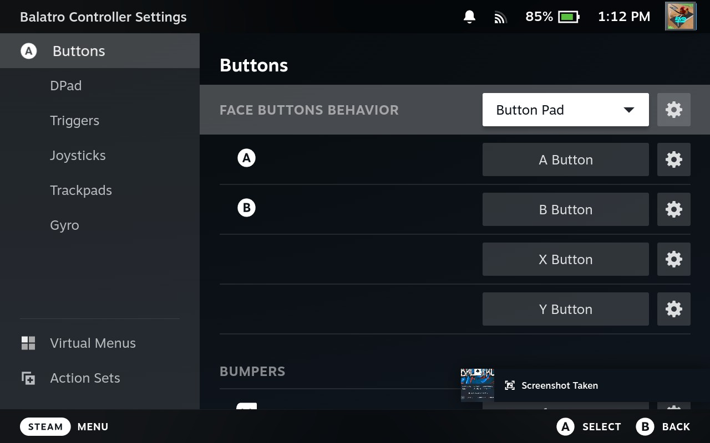
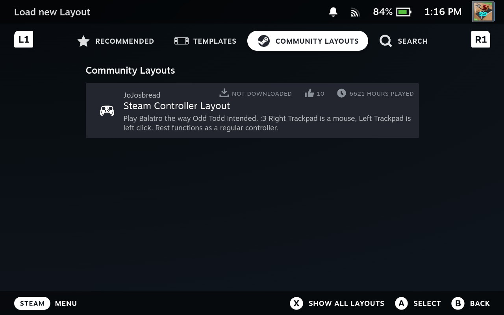
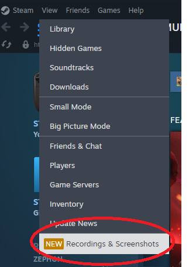

4. Games
This section covers the basic features of the Steam Deck that will help you to make the most out of your gaming experience.
4.1 Install a Game
To install a game from your :
- Press the button.
- Go to .
Figure 4.1: Library option in the Steam Menu.
- Select the game you wish to install.
- Select .
Figure 4.2: Install Button for the game, "Among Us."
Note:
If you have no games within your Steam Library, refer to Section 5.5 Buy a Game, for how to purchase a game.
4.2 Start and Quit a Game
Once you have downloaded and installed games, they will show up in the Steam Library.
To play a game:
- Find the game in the Library (Steam > Library)
- Select to begin playing the game.
Figure 4.3: Play Game Button for the game, "Core Keeper."
To quit a game:
- Press the button.
- Navigate to the right to the menu that pops up.
- Select .
Figure 4.4: Exit Game option for "Balatro."
4.3 Adjust the Brightness
To adjust the brightness of your screen:
- Press the .
- Scroll down to the .
- Slide the to your desired brightness level
Figure 4.5: The Brightness Slider within the Quick Access Menu.
Note:
From this Quick Access Menu, you can also quickly adjust:
- Your speaker and microphone audio levels.
- Turn on and off Airplane Mode.
- Turn Wifi on and off.
- Turn Bluetooth on and off.
- Turn on Night Mode: gives the screen an orange tint that is easier to look at during hours of darkness.
4.4 Change Controller Layout
Sometimes, you will find that the default controller layout for a game does not work for your playstyle.
To change the controller layout for a game:
- Go to the game within the Library (Steam > Library).
- Select the .
- Select .
From this menu, you can change the game's individual keybindings (which buttons do what while in game.)
Figure 4.6: Editing the Controller Layout for "Balatro."
Note:
Going to within a game's Controller Settings allows you to view Layouts that others in the Steam Community have made, which can save you time as someone else has probably optimized the controls already.
Figure 4.7: Community Controller Layouts for "Balatro."
4.5 Update a Game
Most games are updated on the Steam Deck automatically.
To check the latest updates for your games, go to the menu:
- Press the button.
- Select .
Here, you can see any Current, Scheduled, and Completed Updates for your Steam Deck and your games.
Selecting any game within the Scheduled updates section will automatically start downloading the update.
Selecting any of the games listed in the Completed Updates section brings you to its page within the Library.

Figure 4.8: The Downloads menu showing updates.
4.6 Take a Screenshot
To take a screenshot, press the button and the button.
Your screenshots are saved within the Media menu. To access this:
- Press the button.
- Go to .
Here, you can view all of your screenshots.
To share a screenshot on Steam:
- Select the screenshot and press .
- Select
- Add a or leave the dialogue box blank.
- Select .
Your screenshot will now show up on the desktop version of Steam, under the menu.
Figure 4.9: The View menu in the desktop version of Steam.
4.7 Record Gameplay
A relatively new feature within Steam and the Steam Deck is the ability to record your gameplay.
To take video of your gameplay:
- Go to (Steam > Settings).
- Go to .
In this menu, you have the option to change your recording mode:
- : Steam will not record your gameplay
- : Steam will automatically record your gameplay as you start playing
- : Steam will record video only after you press
Figure 4.10: The Game Recording menu.
Gameplay recordings are saved within the Media menu (Steam > Media), along with screenshots.
For more information on recording gameplay, please go to Steam Store: Game Recording.
Next Section
Back to Table of Contents